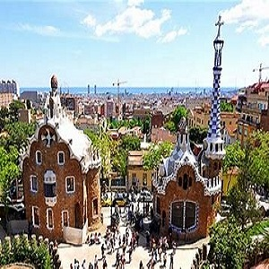

旗艦行程
一趟旅行的啟程，源自於起心動念的瞬間。擁有豐富旅遊經驗、美好生活主張的您，期待每次的遊程順心愉快，在繁忙的生活中轉換個心情，讓那一段段異地風土鐫刻的珍貴回憶，在生命中寫下豐盛甘美的篇章。
國外旅遊
包括國外跟團旅遊行程，暢遊帛琉、美國、日本、韓國、泰國、大陸港澳、歐洲、紐澳及沖繩海島等，體驗必遊、必買、必吃的豐富主題，品質保障的旅遊優惠！

離島行程
台灣得天獨厚，周邊擁有許多特殊地形的美麗離島：蘭嶼、綠島、澎湖、馬祖、金門、小琉球，不管是想玩水、想看古蹟、想要體驗原住民文化、想吃特色美食，你想得到的應有盡有。
度假好去處
放假時渴望享受渡假的樂趣、卻又不想出國人擠人？現在有一種非常適合「只想待在飯店」的懶人旅遊方式。省去往返景點的時間及舟車勞頓，更不需要提前安排旅遊行程，光是待在飯店就能享受一整天！